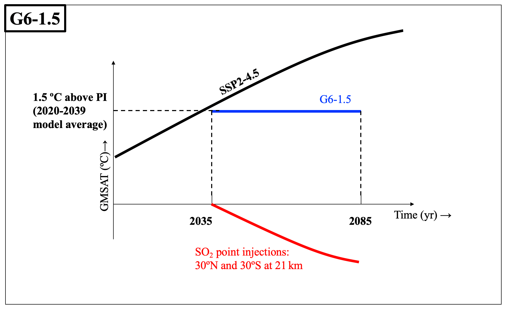

The next phase of GeoMIP simulations (named Phase 7 to keep phase with the Coupled Model Intercomparison Project Phase 7) is underway, and experiments definition has been underway since the 14th GeoMIP meeting, and will be finalized after the 16th GeoMIP meeting.
Our experiments G6-1.5K-SAI, described in Visioni et al. (2024), and intended to be performed by CMIP6 and CMIP7 models alike, has been designated as a Fast Track experiment. If you have questions about the experiment and would like to participate, contact Dan.
Together with G6-1.5K-SAI, modeling groups are running two equivalent experiments for high-latitude, low altitude SAI experiments (G6-1.6K-HiLLA) and for mid-latitudinal MCB (G6-1.5-MCB). This page will be updated once the CMIP7 preprint is available.
For these experiments, which we strongly encourage the community to help analyze, especially in light of the IPCC Seventh Assessment Report (AR7), large amount of output is openly available on AWS and accessible (with example notebooks) from the Reflective Cloud Hub.
|

| |
Official GeoMIP policy for data use is that if you use output from a particular model within a certain time window (1 year after publication of the first paper), you must contact the modeling group and offer them a chance to contribute as authors. Each modeling group is well posed to understand its model and the intricacies of performing the GeoMIP experiments, so their perspectives will undoubtedly be useful. The modeling groups can be found on the Participants page.